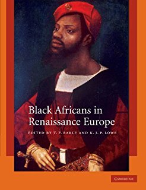

BME is the term used to denote racialised ethnic minorities.
Often, the BME experience is looked at through an american gaze, but this site aims to look at the British BME experience.
BME people have been in the UK since at least the tudor period, where black people were termed " Blackamoores ".
However, commonly the only history of BME people taught in British schools is to do with the Trans-Atlantic slave trade or colonialism. Even when focusing on slavery and colonialism, this is shown in a reverential manner, praising the Great British empire instead of looking how excrutiating life must have been for Black people at the time.